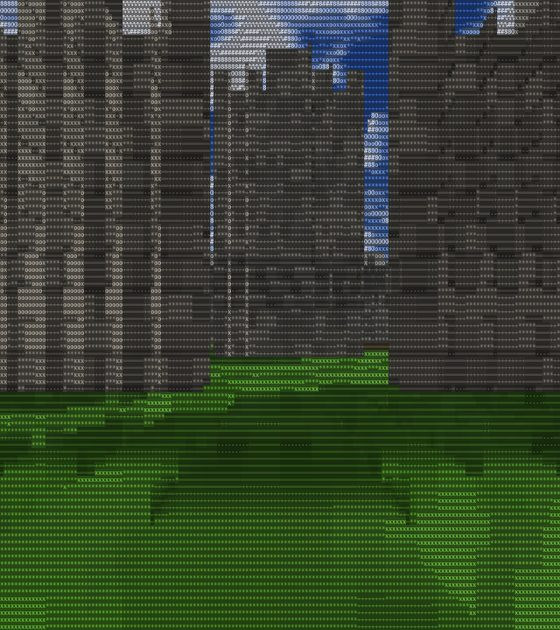
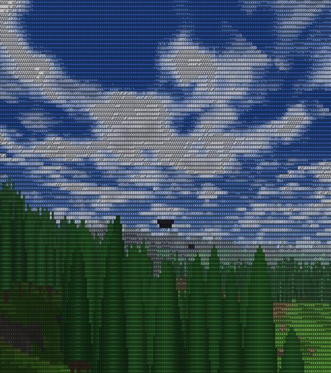
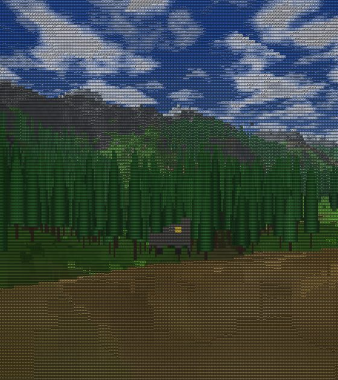
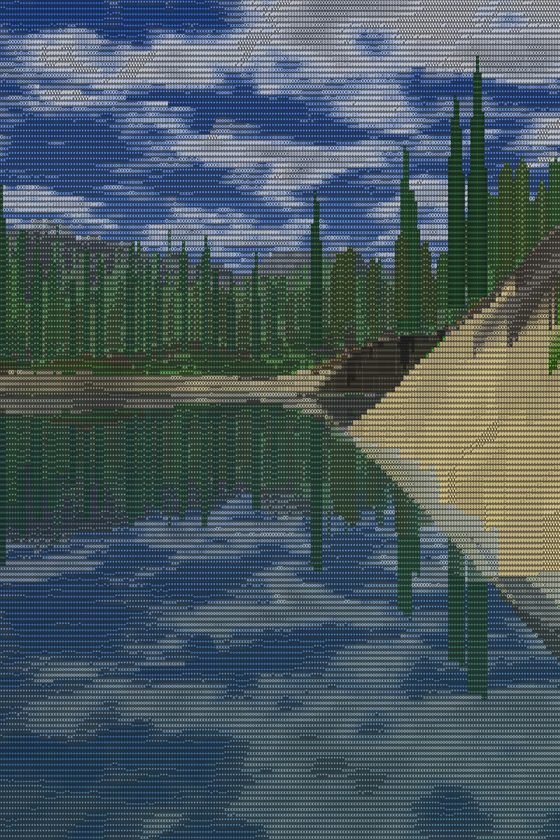
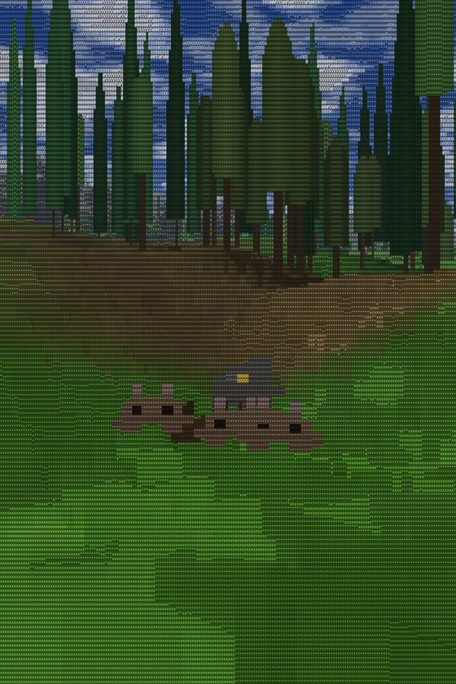
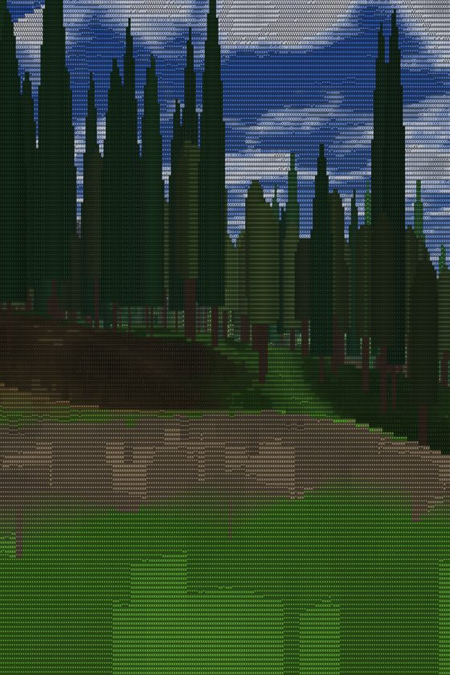
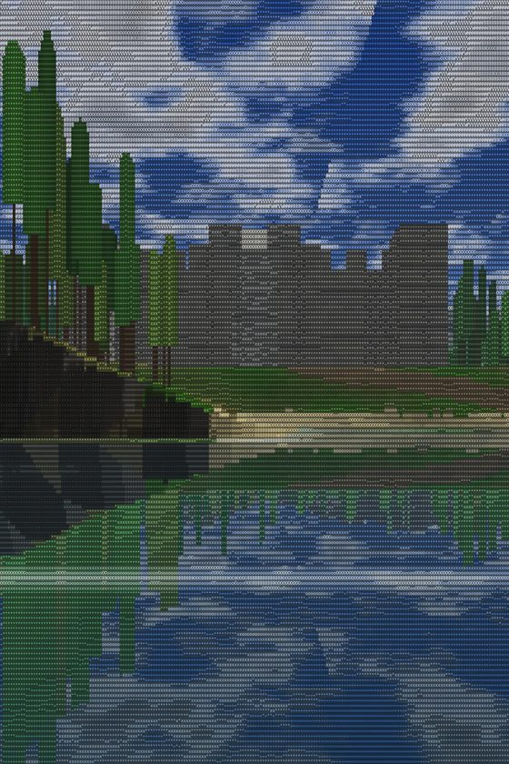
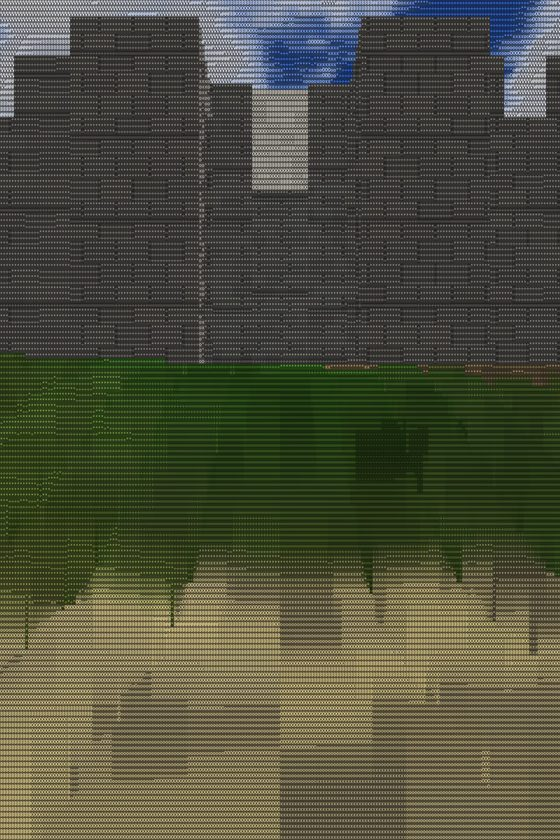
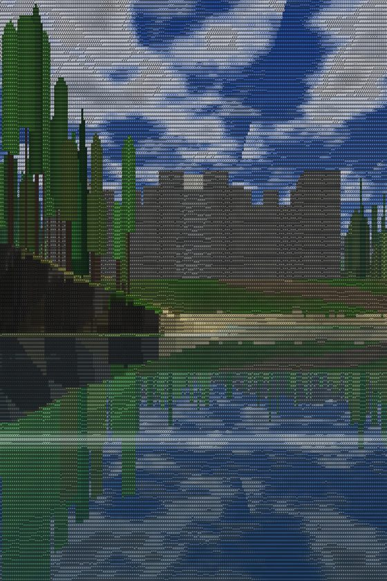

What it is
The Keep is a living world rendered entirely as a grid of colored characters. No 3D engine sits underneath it. It is not a game with a score to win, and it is not a building sandbox.
It is closer to a snow globe you can stroll around inside, and an ant farm you set the dials on. You type a seed and get a whole reproducible world: hills, a lake, rivers, forests, and a stone keep. Then it runs. Birds flock and roost, deer move in herds, fish school, and a wolf pack hunts, breeds, and thins out. Populations rise and fall on their own and never quite empty the world.
You are the keeper, not a character in it. You walk, you look, you notice things. And because it develops live, the world you visit today is not the one you will visit next month.
How it is built
One ray per column
A heightfield raycaster walks the terrain, one ray for each column of the screen, and draws it as vertical spans of characters. That is the whole renderer.
Water that reflects
Every water column runs a second march to mirror what is above it, with a depth gradient and a foam line where you cross the surface.
A keep of flat planes
The castle is built from brick planes the ray intersects directly, so the walls read as solid, crenellated stone instead of hollow columns.
A world that lives
Under the renderer, every creature is a tiny agent running steering rules and a state machine. Flocking, herding, and the hunt fall out of that, held in balance by soft floors and carrying caps.
Soft sun and shadow
A blurred shadow map is sampled per character, so shade falls across the ground and the trees instead of snapping on and off in blocks.
Same on any screen
The vertical field of view is locked and the detail auto-sizes, so the world looks correct on a phone, a tablet, or a desktop, in any orientation.
The story so far
Each of these is a real frame from the engine, one from about every version, in order. The whole thing began as a test level to prove one ray could walk a hill, and grew from there.









Version history
- v0.7.10 — tree girth variety, app icon, this build log
- v0.7.7–0.7.9 — the plane-built keep: crenellations, towers, gatehouse; portrait menu
- v0.7 — young that follow adults and age; the keeper's dials panel
- v0.6 — witnessable predation, soft per-pixel shadows, scattered landmarks
- v0.5 — swimming and the underwater view, three tree types, a solid keep
- v0.4 — the full food web, balanced; seed-driven paths
- v0.3 — first life: birds and rabbits; the seed box
- v0.1–0.2 — the raycaster, a 512×512 world, the first castle